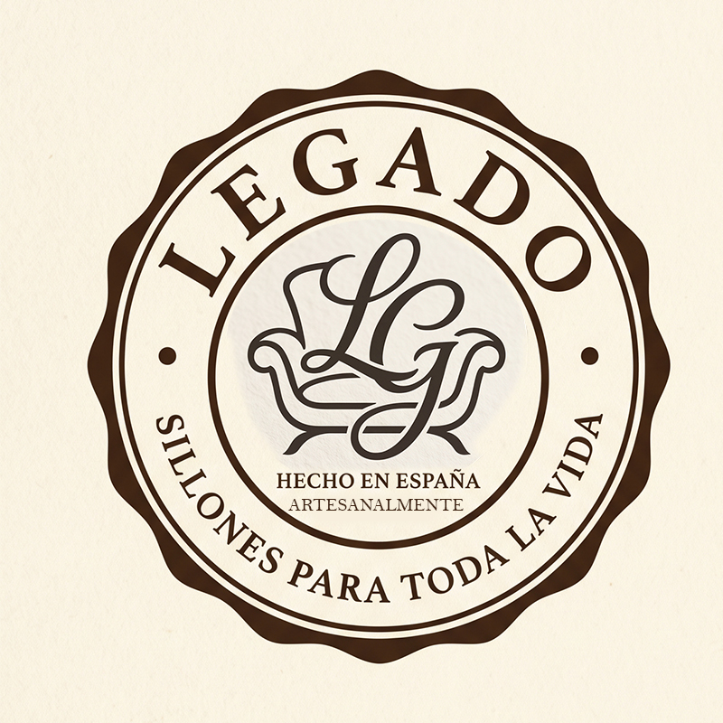

Barcelona. Edita libros. Vive con su pareja y un hijo. Ha terminado el piso del barrio donde quiere quedarse. Ya no se va a mudar más. Cada mueble que entra es una decisión meditada.
La parte alta del relax y la butaca premium, contada con el lenguaje del mueble heredable. Un espacio que nadie defiende todavía en España.
Anillo dentado, monograma central LG, leyenda perimetral. El ancla del sistema. Aparece siempre, pero pequeño.
Cero blanco puro, cero negro absoluto. Todos los colores son cálidos. Eje principal: dorado sobre ébano.
El resto se considera fuera del sistema. Cualquier ratio nuevo requiere aprobación.
Serif para lo que el cliente recuerda. Sans para lo que el cliente necesita.
No mostramos producto: mostramos escenas. Cada imagen es una pregunta: ¿podría yo vivir aquí?
Cueros, tejidos, maderas, latones. Cada uno con su rango tonal aprobado. El latón siempre patinado.
Seis elementos recurrentes que dan unidad al sistema sin parecer un mismo módulo repetido.
Crecemos a piezas nuevas sólo cuando cada una puede mantener el mismo estándar. Hoy son cuatro. Tres aquí.
La web es la única superficie de producto. El packaging, el primer contacto físico con la marca.